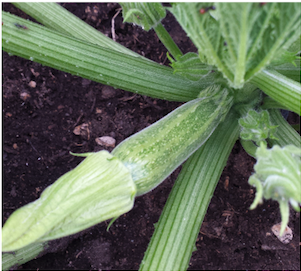

Produzione 2017
Zucchine

Coltivare in terrerno ricco di materia organica e non coltivare dopo asdasadsaaad
- Varietà: Zucchina chiara di Faenza
- Periodo di semina: Marzo/Aprile
- Primo raccolto: Fine Aprile
- Ultimo raccolto: Fine Luglio
- Raccolto:
| Dimensione |
Quantità |
| Piccole (10 cm) |
16 |
| Medie (11-16cm) |
26 |
| Grandi (16cm) |
9 |
|
51 |
Aquista semi
Piselli

American Wonder: Varietà media precoce come ciclo colturale
Consigli
-
Piantare un semenzaio riscaldato
E' importante
- Acquistare vasetti biodegradabili (di cocco o cartone)
- Mantenere areato il semenzaio per avitare muffe
- Non usare il coperchio del semenzaio
- Non mettere il semenzaio vicino al termosifone
- Fissare i sostegni nel terreno non appena le bla bla
- Acquistare una rete bla bla
Aquista semi